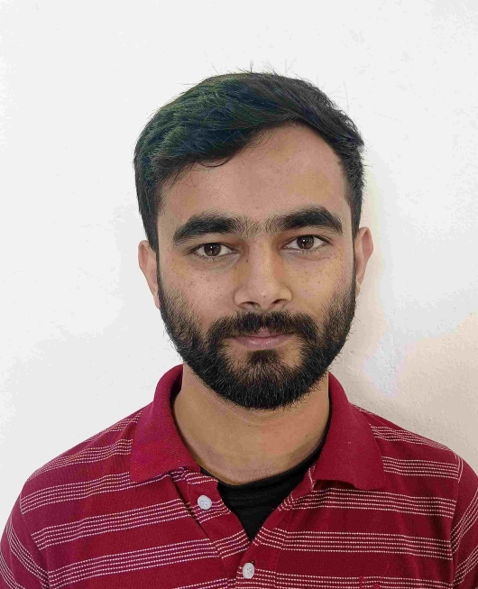

2025 / 01
Causality Analysis of COVID-19 Induced Crashes in Stock and Commodity Markets: A Topological Perspective
Doctoral researcher working at the intersection of topological data analysis and nonlinear dynamics — using the geometry of data to uncover hidden structure in markets, signals, and complex systems.

add"Where statistics sees noise, topology often sees a signature."
I am a doctoral researcher in the Department of Physics at the National Institute of Technology Sikkim. My thesis, Applications of Topological Data Analysis in Nonlinear Dynamics, uses persistent homology and Euler characteristic methods to detect regime shifts, extreme events, and causal structure across financial markets and dynamical systems.
Beyond research, I genuinely love mentoring undergraduates — helping students translate abstract topology into working code is one of the most rewarding parts of academic life. I'm always open to collaborations and to guiding motivated students through projects in TDA, nonlinear dynamics, or financial data analysis.
Email bnsharma09@yahoo.com
Phone +91 8346954320
Location Ravangla, Sikkim, India
ORCID 0009-0002-9569-2718
Google Scholar Buddha Nath Sharma
Affiliation
Department of Physics
NIT Sikkim, Ravangla
Whether you're a student curious about topological data analysis, a researcher working on nonlinear dynamics, or someone exploring financial time-series — I'd love to hear from you.
Send a message →